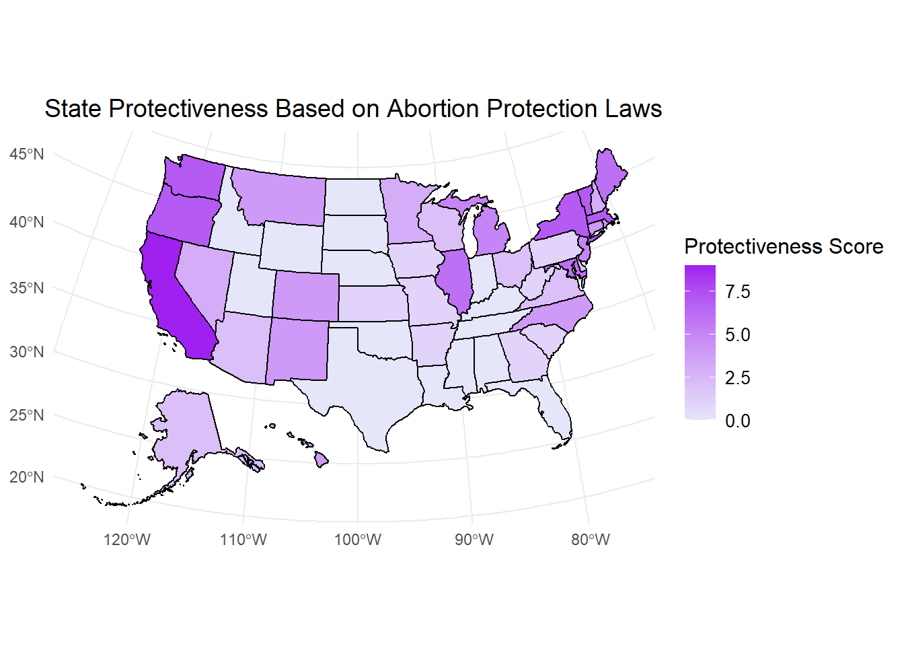

restrictive_policy_columns <- c("total_abortion_ban", "6_week_ban", "12_week_ban", "15_week_ban",
"18_to_23_week_ban", "24_to_26_week_ban", "no_gestational_ban",
"state_constitution_excludes_abortion_rights", "waiting_period_after_counseling",
"waiting_period_after_required_in_person_counseling", "forced_ultrasound",
"state_medicaid_coverage_ban", "private_insurance_coverage_ban",
"medication_abortion_in_person_requirement", "mailing_abortion_pills_banned",
"medically_unnecessary_clinic_regulations", "parental_consent_required_for_minors_abortion",
"parental_notice_required_for_a_minors_abortion", "only_physicians_can_provide_abortions")Appendix
Visualizations and Supplementary Figures
1. Gestational Abortion Ban Types by State

Figure Description: This map categorizes states based on their abortion policy’s gestational limits.
2. State Restrictiveness Based on Abortion Policies

Figure Description: This map illustrates the restrictiveness scores for abortion policies across the United States, with darker shades representing higher restrictiveness. The restrictiveness score was based on the following variables in our dataset:
3. State Protectiveness Based on Abortion Protection Laws

Figure Description: This map depicts the protectiveness scores for abortion policies, highlighting states with higher protections for abortion access in darker shades of purple. The protectiveness score was based on the following variables in our dataset:
protection_policy_columns <- c("protections_to_enter_a_clinic", "shield_law_protecting_providers",
"patient_reproductive_health_data_privacy","state_constitution_protects_abortion_rights",
"state_medicaid_funds_cover_abortion", "private_health_plans_required_to_cover_abortion",
"healthcare_professionals_besides_physicians_provide_abortions","state_fund_for_abortion_care",
"state_requires_coverage_of_prescription_contraception")4. Infant Mortality Rates in Most Restrictive States (2017–2022)

Figure Description: This line graph shows the trends in infant mortality rates (per 1,000 live births) across states with the most restrictive abortion policies from 2017 to 2022.
5. Inbound Abortion Travel by State (2023)

Figure Description: The map visualizes the number of individuals traveling into each state for abortion services in 2023, with California, New York, Florida, and Illinois showing notably higher inbound travel compared to other states.
Presentation Slides
Data Download
The data used for this analysis is available for download in CSV format. Click the link below to access the dataset.